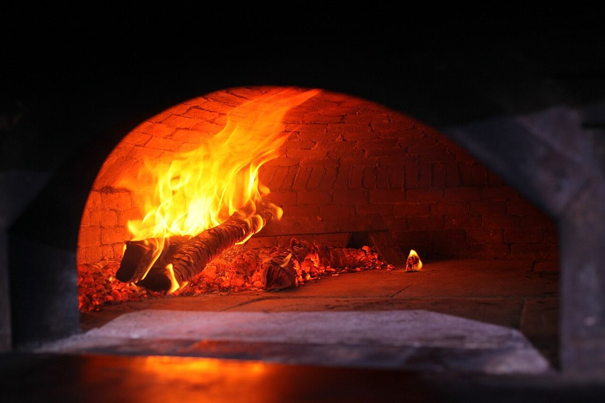

ベーカリー / 沖縄県うるま市
コッペリータ石川製パン工場

沖縄県うるま市石川東恩納654にあるベーカリー「コッペリータ 石川製パン工場」のご案内ページです。営業時間やメニューなど、詳しいことは準備中。お問い合わせは電話かInstagramからどうぞ。
五段の伸縮筒
五つのページを、五段の筒に。
制作側の連想
「コッペ」から伸縮筒を思い浮かべた
制作側の連想で、お店の理念・由来とは無関係です。店名の由来は分かりません。制作側は店名の「コッペ」という響きから細長いかたちを思い浮かべ、そこから、望遠鏡や釣り竿のように伸び縮みする筒を連想しました。そこでこのサイトは、五つのページを五段の伸縮筒に見立て、ページが進むごとに筒が一段ずつ細くなる作りにしています。ページ上部のメニューも、同じように少しずつ細くなっています。
イメージ写真
パンにまつわる写真
写真はお店のものではなく、フリー素材のイメージです。



ご案内
お店のこと(確認できたものだけ)
| 所在地 | 〒904-1111 沖縄県うるま市石川東恩納654 |
|---|---|
| 電話 | 080-8398-8686 |
| 営業時間 | 準備中 |
| 定休日 | 準備中 |
| ご予約 | 準備中 |
| 駐車場 | 準備中 |
| SNS | Instagram @agepan695 |